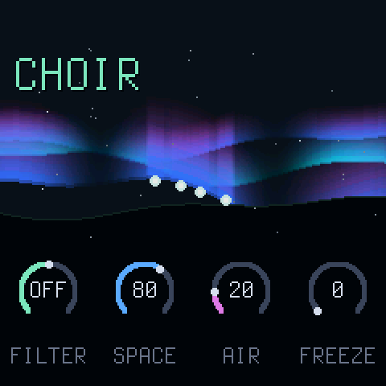
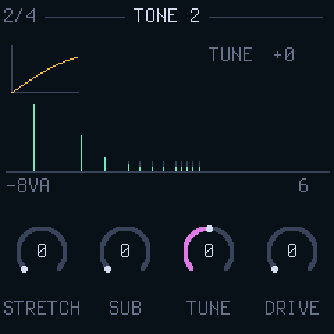
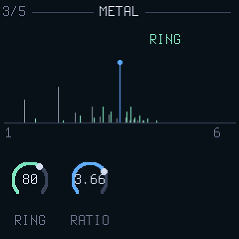
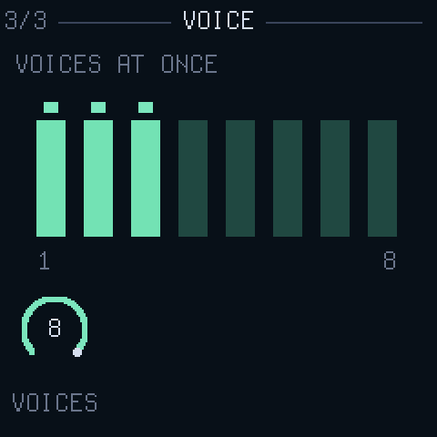

AURORA
the manual
Everything you need to play AURORA, from the first note to the parts you can leave for later.
The basics come first. If you only read one section, read First sounds and HOME. Everything after The pages is for when you want to make your own sounds.
- First sounds
- HOME: the sky and four knobs
- Playing live
- Finding your way round
- The pages
- Keeping a sound
- Two scenes and a morph
- The autopilot
- MIDI
- If something goes wrong
First sounds
- Install AURORA from the install page, or try it first in the emulator. Switch the FM-1 on.
- Play the keys. AURORA is a pad: hold a note or a chord and give it a few seconds. The keys feel how hard you strike and how hard you lean on them. It swells in, keeps moving, and the plate and delay carry on after you let go.
- OCT− and OCT+ move the keys an octave at a time, two octaves either way. Low chords are where AURORA lives.
- Turn PRESETS to hear the twenty-six sounds, from the slow and vast at the start through the short and struck and the horns to two sent in by players at the end. The name is on the screen.
- MASTER is the output volume. VOLUME on the MIDI page (GLO, third knob) is the sound's own level, kept with it, for matching one preset to another.
Give every sound time. Most of what AURORA does happens over seconds and minutes, not on the attack.
HOME: the sky and four knobs

Press HOME. The aurora on the screen is the sound: it lights with every note, bends with the movement, and dims or thins as you filter. The preset's name is top left, with a star once you have changed something.
| FILTER | centre is off. Left of centre a high-pass thins the sound out, right of centre a low-pass darkens it. The same as the Circuit Tracks' master filter. |
| TILT | how fast the overtones fall away: left is dark and soft, right is bright and glassy. |
| AIR | wind and crackle over the pad, breathing with it. |
| METAL | the ring from the METAL page: clean at the left, bells and clang at the right, at the RATIO set there. |
These four are chosen for playing. The sound itself is designed on the other pages.
Playing live
Finding your way round
Every page is a picture of one part of the sound, with four controls under it. Each part of the picture is drawn in the colour of the knob that moves it: green for knob 1, blue for knob 2, violet for knob 3, amber for knob 4.
The lit button tells you which group you are in. A knob turned on any page changes the sound at once, and the star appears by the name on HOME.
The pages
In the order the buttons reach them. You do not need all of these to play: start with TONE and SHAPE, and come to the rest when a sound asks for it.
EDIT: the sound

TONE
The pad is twelve sine overtones a voice. This page is their spectrum, as bars.
| TILT | how fast the overtones fall off. The same TILT as on HOME. |
| SPREAD | odd overtones against even: hollow and clarinet-like at one end, full at the other. |
| BRIGHT | a ceiling the overtones fade out under. Lower it to soften. |
| DETUNE | splits each low overtone into a pair, so the pad shimmers and chords smear instead of beating. |

TONE 2
Where the overtones sit, along a frequency axis.
| STRETCH | pushes the overtones apart, from a pure tone through a piano string to a bell. |
| SUB | a sine an octave below every note. |
| TUNE | transposes, a semitone at a time, an octave either way. |
| DRIVE | a soft overdrive on the whole pad, from clean to thick. |

METAL
The pad multiplied by a second sine: every overtone becomes two, above and below it. Where TONE 2 bends the overtones, this shatters them.
| RING | how much. At full only the shattered sound is left. |
| RATIO | the second sine's pitch as a multiple of the note. Whole numbers (1.00, 2.00, 4.00) stay in tune and thicken; the places between, like 1.41 or 2.76, are bells, gongs and metal. |
The last four presets, BRAAM to TITAN, are built on this page: a ratio a hair off 1.00 throbs, 0.50 growls an octave under, 2.76 is metal.

SWARM
Five sawtooth waves under the pad, through a filter that follows the note.
| LEVEL | how much swarm. At zero there is none. |
| SPREAD | how far the five saws are tuned apart. |
| CUTOFF | the filter, dark to open. |
| RESO | the filter's peak. |

AIR
Noise, shaped: a wind that swells with the pad and lingers after it.
| AIR | how much. The same AIR as on HOME. |
| TONE | the colour of the wind, low to high. |
| TEXTUR | smooth wind at one end, crackle at the other. |
| BREATH | the air breathes in and out on its own; this is how quickly. |
ENV: the envelope

SHAPE
How a note comes and goes. The dot rides the curve as you play.
| ATTACK | how long a note takes to arrive. Long for a pad, short for a bell. |
| DECAY | how long it takes to fall to the sustain level. |
| SUSTAIN | the level a held note settles at. Zero makes a struck sound. |
| RELEAS | how long it lingers after you let go. |

TOUCH
How the sound answers your playing.
| BLOOM | staggers the overtones' entry, so a chord opens like a flower. |
| SWELL | how far pressure opens the pad: leaning on a key, SELECT, aftertouch or the expression CC. |
| VELO | how much a hard or soft strike matters, on the keys or over MIDI. Zero plays every note the same. |
| GLIDE | slides each note in from the last one. |

VOICE
How many notes sound at once, kept with the sound.
| VOICES | 1 to 8. At 1 the sound is mono: the last note wins, GLIDE is legato, and a key still held comes back when the newer one lifts. Basses, leads and the horns want 1; pads want 8. |
A sound that crunches as a chord is asking for VOICES 1.
LFO: the movement
AURORA never quite sits still. Four slow sources bend the tone, the colour, the pitch and the space. MOVE scales it all; these pages say what moves and where it goes.

MOVE
The four sources scrolling past, dim as they are and bright as MOVE lets them through.
| MOVE | how much movement. |
| RATE | how fast the sources go, from minutes to seconds. |
| DRIFT | a separate wander on every overtone: the pad loosens. |
| WIDTH | the stereo width. Odd overtones lean left, even right. |

SOURCES
How much of each source goes in.
| WANDER | a random LFO, a different one in every voice. |
| WALK | a random walk: slow, unrepeating. |
| CHAOS | a Lorenz attractor: smooth with sudden turns. |
| TIDE | a slow sine over bars of the MIDI clock, or over minutes without one. |

TARGETS
How deep the movement goes into each part of the sound.
| TILT | into the tone's slope. |
| COLOUR | into spread, brightness, the swarm's filter and the air's tone. |
| PITCH | into the pitch, gently. |
| SPACE | into the reverb. |
FX: the space

SPACE
A plate reverb with a shimmer.
| MIX | how much reverb. |
| SIZE | how long the tail. |
| DAMP | how fast the highs die in the tail. |
| SHIMMR | a pitch-shifted feed back into the tail, an octave up: the halo. |

DELAY
A tape delay.
| TIME | the gap between repeats. With a MIDI clock in it becomes a note division, 1/32 to 1/2, and the repeats follow the tempo. |
| FEEDBK | how many repeats. |
| MIX | how much delay. |
| TAPE | the tape's warmth and wobble, more with every repeat. |

FREEZE
Holds what is in the delay line and plays a cloud of grains off it. REC does this at full while held; this page sets it for a preset.
| FREEZE | how long the hold lasts: seconds at the bottom, half a minute near the top, for ever at full. New notes come in as the hold lets go. |
| GRAIN | how long each grain is. |
| SPRAY | how far back in the line the grains pick from. |
| SHIFT | the grains' pitch, an octave either way, a semitone at a time. |
GLO: MIDI

MIDI
The settings, and a light for every message that comes in.
| CHAN | the MIDI channel, or OMNI for all of them. |
| EXPR | what counts as pressure: AT for channel aftertouch, or a CC number. CC 1, the mod wheel, to begin with. |
| VOLUME | the sound's own level. Also CC 7. |
| KEYS | the keys' own velocity and pressure, ON. OFF plays every key the same, as a plain switch. |
The version is top right.
Keeping a sound
AURORA remembers where you left it. Switch off and on and the same preset, with your changes, comes back, and so does scene B with its changes. To keep a sound and still move on to others, put it in one of sixteen USER slots:
- Press SAVE. The screen shows SAVE > and a slot: the sound's own if it came from one, else the first empty one.
- Turn PRESETS to the slot you want.
- Press SAVE again. The sound as you hear it is written, and that slot is now selected.
Any other button cancels. USER slots follow the twenty-six presets on the PRESETS encoder, and they survive firmware updates: a sound saved before a control existed loads with that control at its default.
Sending a sound
To get a sound off the FM-1, press SAVE and then GLO. The screen says SOUND SENT and the sound goes out over USB MIDI as one SysEx message. With the FM-1 plugged into a computer, the share page catches it and turns it into text: every control's value, to keep, to paste anywhere, or to send in as a preset.
In the emulator, Copy sound makes the same text from the sound playing there.
Two scenes and a morph
Every sound has a second scene, B: another preset to lean towards. Out of the box B is DEEP.
The name on HOME reads B: while you are at B. The knobs edit whichever scene you are at: at A your own sound, at B the B sound. Both are kept when you switch off, so B can be a second sound of your own and not just a preset.
To keep a B sound for good, go to B (SEL) and SAVE: B goes into the USER slot offered (its own, or the first empty one) and A is left as it was.
The autopilot
Press SEQ and nine controls wander slowly round where you set them: tilt, brightness, spread, the swarm's cutoff, the air and its tone, the reverb, the width and the movement's rate. Each picks a new place to drift to every half minute or so. The sound never leaves what you designed, it just stops sitting still. Press SEQ again and it settles back to how you set it.
Latch a chord, press SEQ, and leave the room.
MIDI
Sequencer MIDI out into the FM-1's TRS jack, type A. Set the channel on the MIDI page or leave it OMNI.
| Notes, velocity | up to eight voices, as VOICES on the VOICE page allows. VELO on TOUCH sets how much velocity counts. |
|---|---|
| CC 80..87 | the eight macros, in the Circuit Tracks' order: MOVE SPACE AIR TILT WIDTH DRIFT FREEZE BLOOM |
| CC 74 | the master filter, high-pass left of centre, low-pass right |
| CC 7 | volume |
| Channel pressure, or the EXPR CC | swells the pad open, as far as SWELL allows; polyphonic aftertouch swells one note |
| CC 64 | sustain |
| Pitch bend | the pitch, two semitones |
| Program change | a preset: 0 to 25 the factory sounds, 26 to 41 the USER slots |
| Clock, start | the delay's TIME becomes a note division and follows the tempo; the tide counts its bars, and starts over on start |
| SysEx out | SAVE, then GLO sends the current sound over USB MIDI; the share page reads it |
| USB audio | the FM-1 is also an audio interface: a computer can record AURORA's output over the same cable, at 44.1 or 48 kHz |
The macros and the filter set the same controls the knobs do, so a sequencer can play the HOME page.
If something goes wrong
- A note will not stop: press both OCT buttons at once. Everything goes quiet. If PLAY is lit, latch is on; press it.
- No sound from MIDI: check CHAN on the MIDI page, and that the light flashes when you play. OMNI takes every channel.
- Too quiet, or distorting: MASTER first, then VOLUME on the MIDI page, then DRIVE on TONE 2.
- It sounds different from the preset: a star by the name means you have changed something. Turn PRESETS away and back to reload it.
- It will not start: hold OCT− while switching on, then install again from the install page. That rescue is always there.
- Going back: any other FM-1 firmware installs over AURORA the same way.